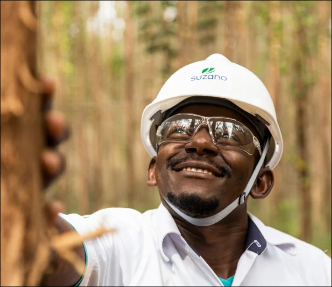
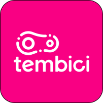
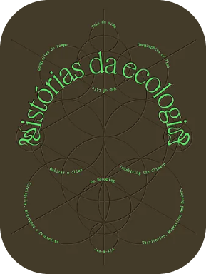

Parques e corredores ecológicos
Conectam áreas verdes, refrescam bairros e criam espaços de lazer.
01 — MEIO AMBIENTE
Quando natureza e planejamento caminham juntos, a cidade fica mais fresca, resiliente e saudável.

POR QUE IMPORTA
O planejamento urbano sustentável substitui parte do concreto por soluções que imitam processos naturais. Elas ajudam a controlar a água da chuva, reduzir o calor e devolver biodiversidade aos bairros.
Conectam áreas verdes, refrescam bairros e criam espaços de lazer.
Isolam edifícios, absorvem parte da chuva e melhoram o microclima.
Filtram o escoamento e reduzem a sobrecarga da drenagem urbana.
INICIATIVAS
Exemplos de empresas que ligam mobilidade, resíduos e consumo a práticas ambientais.

Incentiva deslocamentos de bicicleta e ajuda a reduzir emissões e congestionamentos.
Atua com reciclagem, destinação correta de resíduos e compostagem de materiais orgânicos.
Mantém pontos de coleta para que embalagens usadas retornem à cadeia de reaproveitamento.
PARA CONTINUAR
Três leituras presentes no protótipo para aprofundar a relação entre sociedade e natureza.
Rachel Carson

Jean-Paul Deléage
Ailton Krenak